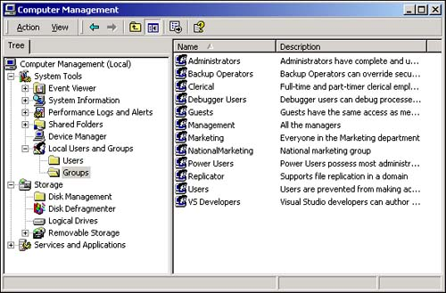
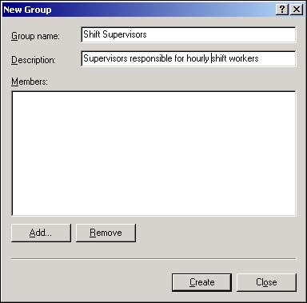
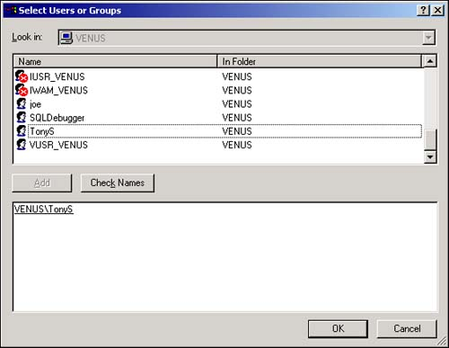

Windows 2000 recognizes individual users as well as functional groups. You can, for instance, set up a group called Marketing or Sales, and then add new users to the computer. In addition, each user can be added to any of the groups that you've created. Therefore, you might have a marketing manager who belongs to both the Marketing and Management groups.
One advantage of using groups is that SQL Server automatically recognizes the registered Windows users. SQL Server is tightly integrated with Windows security, and you are able to use this integration as you set up SQL Server security. This means, for instance, that you can provide the marketing group with access to tables and stored procedures that are related to marketing data, yet deny the salespeople access to those same tables and procedures. The marketing manager mentioned earlier in this chapter is able to work with marketing and management data (such as employee human resources data).
Because you are treating multiple users as a single group, the administrative effort is considerably less than if you had gone to the trouble of providing access to each individual user. As you'll soon see, treating users as members of groups greatly simplifies the security administration task.
Handling individual users is a real hassle. In large installations with hundreds of users, you spend inordinate amounts of time managing SQL Server security on a user-by-user basis. Instead, you'd like to use Windows groups to add groups of users to the database.
Use the Administrative Tools in the Control Panel to create groups and add the users you've created to those groups.
Most often, users are arranged into logical groupings. For instance, all the people in the marketing department are likely to belong to a group named Marketing. Similarly, managers probably belong to a Management group. In this section, you'll learn how to specify the groups on your computer and add the user accounts you've created to those groups.
Later, as users log in to SQL Server, they'll be able to log in as themselves or as a group. Although this might sound a bit strange, to SQL Server, an individual user is the same as a group of users. All that SQL Server sees is an identifier ("TonyS" or "Marketing"), and it matches that identity with a Windows network login.
Choose Start, Settings, Control Panel to open the Control Panel.
Double-click on the Administrative Tools applet to access the Windows 2000 administration options.
Select the security settings by double-clicking on the Computer Management option and opening the dialog box you see in Figure 11.5.

Use the + next to Local Users and Groups to reveal the Users and Groups icons. Right-click on the Groups icon and select New Group from the shortcut menu that appears. (Alternatively, use the New Group menu item under the Action menu). You'll see the New Group dialog box as shown in Figure 11.6. Provide a name for the new group, such as Shift Supervisors, in the Group Name text box at the top of the New Group dialog box.

Provide a verbose description for the group in the Description text box.
Near the bottom left of the New Group dialog box, you'll see two buttons labeled Add and Check Names (see Figure 11.7). Click on the Add button to open the list of all users who are registered on this computer.

The top half of the Select Users or Groups dialog box contains an alphabetically sorted list of all the users in the local domain. Use the scrollbar if necessary to locate the user you want to add to the group. Select the user and use the Add button (or double-click on the user) to add the user to the group. As users are added to the group, their names appear in the lower half of the Select Users or Groups dialog box. When you have completed the selection process, click the OK button.
You'll be returned to the New Group dialog box. You should see the users you've added to the group displayed in the list at the middle of the dialog box.
When you're finished adding groups to the computer, click the Close button to dismiss the New Group dialog box.
Normally, as a database developer, you won't be creating Windows 2000 groups. However, in many small environments, developers are required to take on more than a single role. Also, you might find it useful to create a group login just for the applications you write.